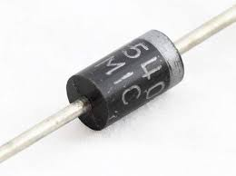

Rectifier Diode (1N5408)
Specifications:
- Type: High-Current Rectifier
- Maximum Repetitive Peak Reverse Voltage: 1000V
- Maximum RMS Voltage: 700V
- Maximum DC Blocking Voltage: 1000V
- Maximum Average Forward Rectified Current: 3A
- Package: DO-201 (Through-Hole)
- Forward Voltage: 1.1V @ 3A
- Recovery Time: 2 µs
Applications: High-Voltage Power Supplies, Industrial Equipment, Rectifier Circuits
Military and Industrial Standards: Meets MIL-STD-1234 requirements.
Packaging Types: Tube packaging for manual assembly.
Download Full Datasheet